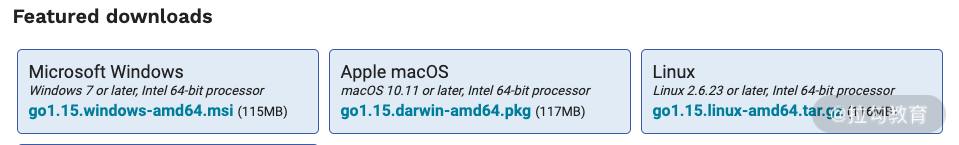

- 00 开篇词 Go 为开发者的需求设计，带你实现高效工作.md.html
- 01 基础入门：编写你的第一个 Go 语言程序.md.html
- 02 数据类型：你必须掌握的数据类型有哪些？.md.html
- 03 控制结构：if、for、switch 逻辑语句的那些事儿.md.html
- 04 集合类型：如何正确使用 array、slice 和 map？.md.html
- 05 函数和方法：Go 语言中的函数和方法到底有什么不同？.md.html
- 06 struct 和 interface：结构体与接口都实现了哪些功能？.md.html
- 07 错误处理：如何通过 error、deferred、panic 等处理错误？.md.html
- 08 并发基础：Goroutines 和 Channels 的声明与使用.md.html
- 09 同步原语：sync 包让你对并发控制得心应手.md.html
- 10 Context：你必须掌握的多线程并发控制神器.md.html
- 11 并发模式：Go 语言中即学即用的高效并发模式.md.html
- 12 指针详解：在什么情况下应该使用指针？.md.html
- 13 参数传递：值、引用及指针之间的区别？.md.html
- 14 内存分配：new 还是 make？什么情况下该用谁？.md.html
- 15 运行时反射：字符串和结构体之间如何转换？.md.html
- 16 非类型安全：让你既爱又恨的 unsafe.md.html
- 17 SliceHeader：slice 如何高效处理数据？.md.html
- 18 质量保证：Go 语言如何通过测试保证质量？.md.html
- 19 性能优化：Go 语言如何进行代码检查和优化？.md.html
- 20 协作开发：模块化管理为什么能够提升研发效能？.md.html
- 21 网络编程：Go 语言如何玩转 RESTful API 服务？.md.html
- 22 网络编程：Go 语言如何通过 RPC 实现跨平台服务？.md.html
- 23 结束语 你的 Go 语言成长之路.md.html
- 捐赠
01 基础入门：编写你的第一个 Go 语言程序
从这节课开始，我会带你走进 Go 语言的世界。我会用通俗易懂的语言，介绍 Go 语言的各个知识点，让你可以从零开始逐步学习，再深入它的世界。不管你以前是否接触过 Go 语言，都可以从这个专栏中受益。
现在，让我以一个经典的例子“Hello World”来带你入门 Go 语言，了解它是如何运行起来的。
Hello, 世界
如果你学过 C 语言，对这个经典的例子应该不会陌生。通过它，我先带你大概了解一下 Go 语言的一些核心理念，让你对 Go 语言代码有个整体的印象。如下所示：
ch01/main.go
package main
import "fmt"
func main() {
fmt.Println("Hello, 世界")
}
这五行代码就构成了一个完整的 Go 程序，是不是非常简单？现在我运行这段代码，看看输出的结果，方法是打开终端输入以下命令，然后回车。
$ go run ch01/main.go
Hello, 世界
其中 go run ch01/main.go 是我输入的命令，回车后看到的“Hello, 世界”是 Go 程序输出的结果。
代码中的 go 是一个 Go 语言开发工具包提供的命令，它和你平时常用的 ls 命令一样都是可执行的命令。它可以帮助你运行 Go 语言代码，并进行编译，生成可执行的二进制文件等。
run 在这里是 go 命令的子命令，表示要运行 Go 语言代码的意思。最后的 ch01/main.go 就是我写的 Go 语言代码文件了。也就是说，整个 go run ch01/main.go 表示要运行 ch01/main.go 里的 Go 语言代码。
程序结构分析
要让一个 Go 语言程序成功运行起来，只需要 package main 和 main 函数这两个核心部分， package main 代表的是一个可运行的应用程序，而 main 函数则是这个应用程序的主入口。
在“Hello, 世界”这个简单的示例中，包含了一个 Go 语言程序运行的最基本的核心结构。我们以此为例，来逐一介绍程序的结构，了解 Go 语言的核心概念。
- 第一行的 package main 代表当前的 ch01/main.go 文件属于哪个包，其中 package 是 Go 语言声明包的关键字，main 是要声明的包名。在 Go 语言中 main 包是一个特殊的包，代表你的 Go 语言项目是一个可运行的应用程序，而不是一个被其他项目引用的库。
- 第二行的 import “fmt” 是导入一个 fmt 包，其中 import 是 Go 语言的关键字，表示导入包的意思，这里我导入的是 fmt 包，导入的目的是要使用它，下面会继续讲到。
- 第三行的 func main() 是定义了一个函数，其中 func 是 Go 语言的关键字，表示要定义一个函数或者方法的意思，main 是函数名，() 空括号表示这个 main 函数不接受任何参数。在 Go 语言中 main 函数是一个特殊的函数，它代表整个程序的入口，也就是程序在运行的时候，会先调用 main 函数，然后通过 main 函数再调用其他函数，达到实现项目业务需求的目的。
- 第四行的 fmt.Println(“Hello, 世界”) 是通过 fmt 包的 Println 函数打印“Hello, 世界”这段文本。其中 fmt 是刚刚导入的包，要想使用一个包，必须先导入。Println 函数是属于包 fmt 的函数，这里我需要它打印输出一段文本，也就是“Hello, 世界”。
- 第五行的大括号 } 表示 main 函数体的结束。现在整个代码片段已经分析完了，运行就可以看到“Hello, 世界”结果的输出。
从以上分析来看，Go 语言的代码是非常简洁、完整的核心程序，只需要 package、import、func main 这些核心概念就可以实现。 在后面的课时中，我还会讲如何使用变量，如何自定义函数等，这里先略过不讲，我们先来看看 Go 语言的开发环境是如何搭建的，这样才能运行上面的 Go 语言代码，让整个程序跑起来。
Go 语言环境搭建
要想搭建 Go 语言开发环境，需要先下载 Go 语言开发包。你可以从官网 https://golang.org/dl/ 和 https://golang.google.cn/dl/ 下载（第一个链接是国外的官网，第二个是国内的官网，如果第一个访问不了，可以从第二个下载）。
下载时可以根据自己的操作系统选择相应的开发包，比如 Window、MacOS 或是 Linux 等，如下图所示：

Windows MSI 下安装
MSI 安装的方式比较简单，在 Windows 系统上推荐使用这种方式。现在的操作系统基本上都是 64 位的，所以选择 64 位的 go1.15.windows-amd64.msi 下载即可，如果操作系统是 32 位的，选择 go1.15.windows-386.msi 进行下载。
下载后双击该 MSI 安装文件，按照提示一步步地安装即可。在默认情况下，Go 语言开发工具包会被安装到 c:\Go 目录，你也可以在安装过程中选择自己想要安装的目录。
假设安装到 c:\Go 目录，安装程序会自动把 c:\Go\bin 添加到你的 PATH 环境变量中，如果没有的话，你可以通过系统 -> 控制面板 -> 高级 -> 环境变量选项来手动添加。
Linux 下安装
Linux 系统同样有 32 位和 64 位，你可以根据你的 Linux 操作系统选择相应的压缩包，它们分别是 go1.15.linux-386.tar.gz 和 go1.15.linux-amd64.tar.gz。
下载成功后，需要先进行解压，假设你下载的是 go1.15.linux-amd64.tar.gz，在终端通过如下命令即可解压：
sudo tar -C /usr/local -xzf go1.15.linux-amd64.tar.gz
输入后回车，然后输入你的电脑密码，即可解压到 /usr/local 目录，然后把 /usr/local/go/bin 添加到 PATH 环境变量中，就可以使用 Go 语言开发工具包了。
把下面这段添加到 /etc/profile 或者 $HOME/.profile 文件中，保存后退出即可成功添加环境变量。
export PATH=$PATH:/usr/local/go/bin
macOS 下安装
如果你的操作系统是 macOS，可以采用 PKG 安装包。下载 go1.15.darwin-amd64.pkg 后，双击按照提示安装即可。安装成功后，路径 /usr/local/go/bin 应该已经被添加到了 PATH 环境变量中，如果没有的话，你可以手动添加，和上面 Linux 的方式一样，把如下内容添加到 /etc/profile 或者 $HOME/.profile 文件保存即可。
export PATH=$PATH:/usr/local/go/bin
安装测试
以上都安装成功后，你可以打开终端或者命令提示符，输入 go version 来验证 Go 语言开发工具包是否安装成功。如果成功的话，会打印出 Go 语言的版本和系统信息，如下所示：
$ go version
go version go1.15 darwin/amd64
环境变量设置
Go 语言开发工具包安装好之后，它的开发环境还没有完全搭建完成，因为还有两个重要的环境变量没有设置，它们分别是 GOPATH 和 GOBIN。
- GOPATH：代表 Go 语言项目的工作目录，在 Go Module 模式之前非常重要，现在基本上用来存放使用 go get 命令获取的项目。
- GOBIN：代表 Go 编译生成的程序的安装目录，比如通过 go install 命令，会把生成的 Go 程序安装到 GOBIN 目录下，以供你在终端使用。
假设工作目录为 /Users/flysnow/go，你需要把 GOPATH 环境变量设置为 /Users/flysnow/go，把 GOBIN 环境变量设置为 $GOPATH/bin。
在 Linux 和 macOS 下，把以下内容添加到 /etc/profile 或者 $HOME/.profile 文件保存即可。
export GOPATH=/Users/flysnow/go
export GOBIN=$GOPATH/bin
在 Windows 操作系统中，则通过控制面板 -> 高级 -> 环境变量选项添加这两个环境变量即可。
项目结构
采用 Go Module 的方式，可以在任何位置创建你的 Go 语言项目。在整个专栏中，我都会使用这种方式演示 Go 语言示例，现在你先对 Go Module 项目结构有一个大概了解，后面的课时我会详细地介绍 Go Module。
假设你的项目位置是 /Users/flysnow/git/gotour，打开终端，输入如下命令切换到该目录下：
$ cd /Users/flysnow/git/gotour
然后再执行如下命令创建一个 Go Module 项目：
$ go mod init
执行成功后，会生成一个 go.mod 文件。然后在当前目录下创建一个 main.go 文件，这样整个项目目录结构是：
gotour
├── go.mod
├── lib
└── main.go
其中 main.go 是整个项目的入口文件，里面有 main 函数。lib 目录是项目的子模块，根据项目需求可以新建很多个目录作为子模块，也可以继续嵌套为子模块的子模块。
编译发布
完成了你的项目后，可以编译生成可执行文件，也可以把它发布到 $GOBIN 目录，以供在终端使用。以“Hello 世界”为例，在项目根目录输入以下命令，即可编译一个可执行文件。
$ go build ./ch01/main.go
回车执行后会在当前目录生成 main 可执行文件，现在，我们来测试下它是否可用。
$ ./main
Hello, 世界
如果成功打印出“Hello, 世界”，证明程序成功生成。
以上生成的可执行文件在当前目录，也可以把它安装到 $GOBIN 目录或者任意位置，如下所示：
$ go install ./ch01/main.go
使用 go install 命令即可，现在你在任意时刻打开终端，输入 main 回车，都会打印出“Hello, 世界”，是不是很方便！
跨平台编译
Go 语言开发工具包的另一强大功能就是可以跨平台编译。什么是跨平台编译呢？就是你在 macOS 开发，可以编译 Linux、Window 等平台上的可执行程序，这样你开发的程序，就可以在这些平台上运行。也就是说，你可以选择喜欢的操作系统做开发，并跨平台编译成需要发布平台的可执行程序即可。
Go 语言通过两个环境变量来控制跨平台编译，它们分别是 GOOS 和 GOARCH 。
- GOOS：代表要编译的目标操作系统，常见的有 Linux、Windows、Darwin 等。
- GOARCH：代表要编译的目标处理器架构，常见的有 386、AMD64、ARM64 等。
这样通过组合不同的 GOOS 和 GOARCH，就可以编译出不同的可执行程序。比如我现在的操作系统是 macOS AMD64 的，我想编译出 Linux AMD64 的可执行程序，只需要执行 go build 命令即可，如以下代码所示：
$ GOOS=linux GOARCH=amd64 go build ./ch01/main.go
关于 GOOS 和 GOARCH 更多的组合，参考官方文档的 \(GOOS and \)GOARCH 这一节即可。
Go 编辑器推荐
好的编辑器可以提高开发的效率，这里我推荐两款目前最流行的编辑器。
第一款是 Visual Studio Code + Go 扩展插件，可以让你非常高效地开发，通过官方网站 https://code.visualstudio.com/ 下载使用。
第二款是老牌 IDE 公司 JetBrains 推出的 Goland，所有插件已经全部集成，更容易上手，并且功能强大，新手老手都适合，你可以通过官方网站 https://www.jetbrains.com/go/ 下载使用。
总结
这节课中你学到了如何写第一个 Go 语言程序，并且搭建好了 Go 语言开发环境，创建好了 Go 语言项目，同时也下载好了 IDE 严阵以待，那么现在我就给你留个小作业：
改编示例“Hello 世界”的代码，打印出自己的名字。
© 2019 - 2023 Liangliang Lee. Powered by gin and hexo-theme-book.